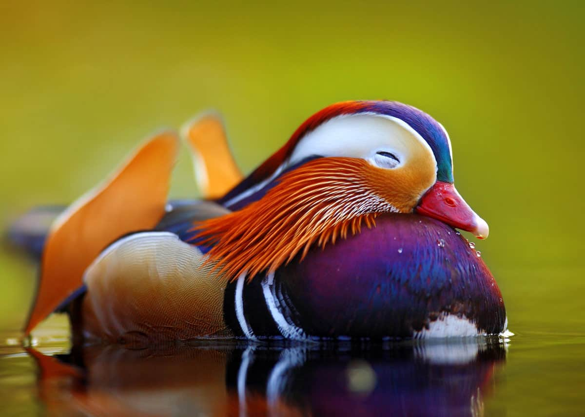
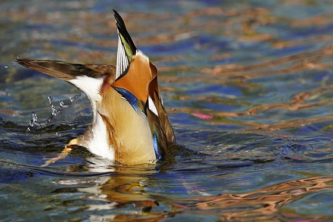
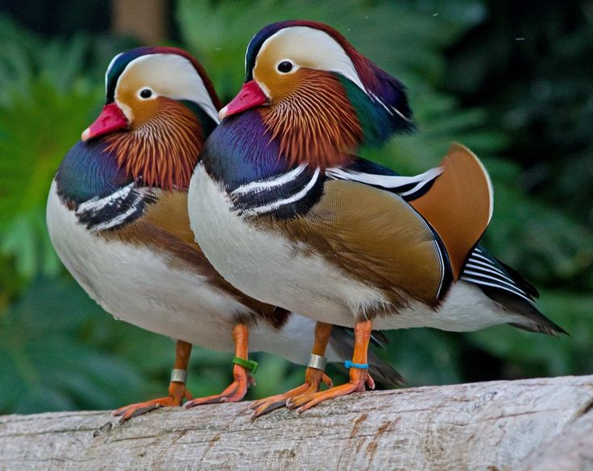

Need a little evidence first?
I mean lookit this guy. Have you ever seen something cuter in your life?
 Did you know? Mandarins don't dive for food, they dabble. That's what you're seein' here.
 A symbol of love in East Asia, mandarins are monogamous and mate for life.
A symbol of love in East Asia, mandarins are monogamous and mate for life.And sometimes they just like to bro down.